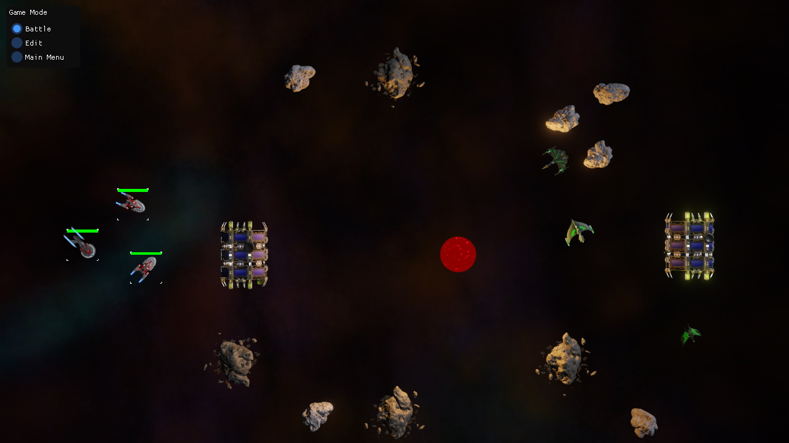
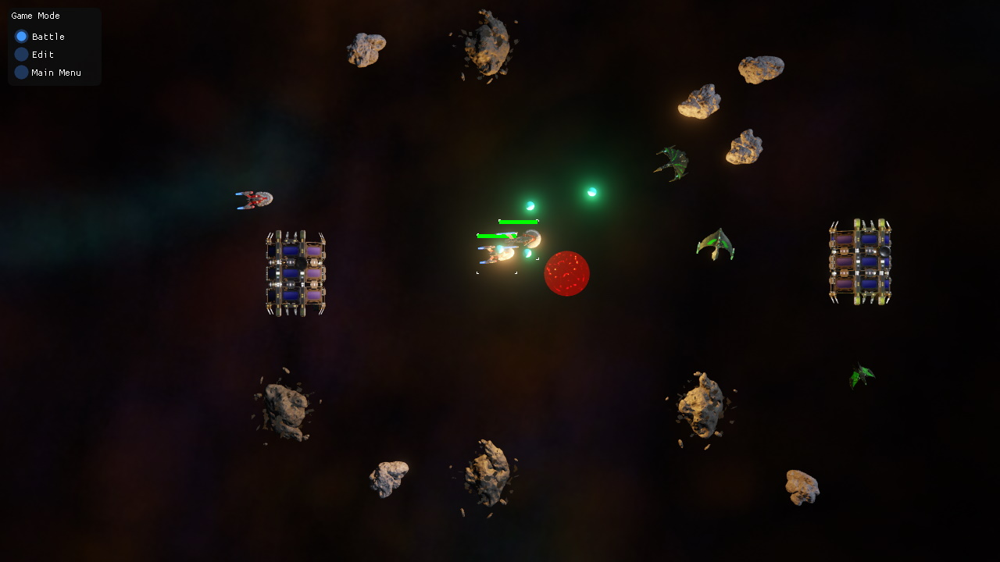
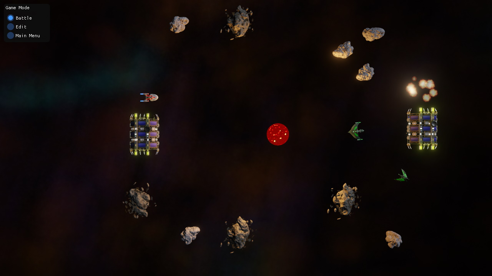
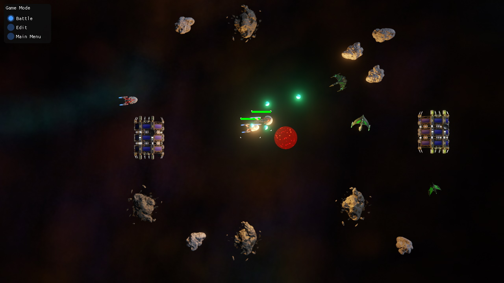
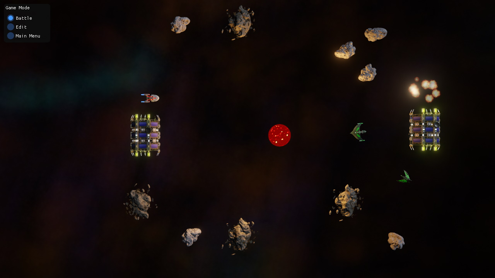

RTS Sample
The RTS Game Plugin is a more complex example of how to write a plugin that adds custom components and game logic.

 



Prerequisites
Note: The sample is only available when the solution is built with EZ_BUILD_SAMPLES activated in CMake. The sample will only work, if the RtsGamePlugin has been compiled.
Project
The editor project belonging to this sample can be found under Data/Samples/RTS.
Open the Space scene document. Make sure to transform all assets (in the AssetBrowser panel the box with the red arrow). Then press 'Play the Game' in the scene. Use the mouse to create, select and send ships around. Further usage instructions are listed by the game UI.
Code
The code shows how to use a custom ezGameState for high-level game logic, as well as a number of custom ezComponent classes for various different game elements.